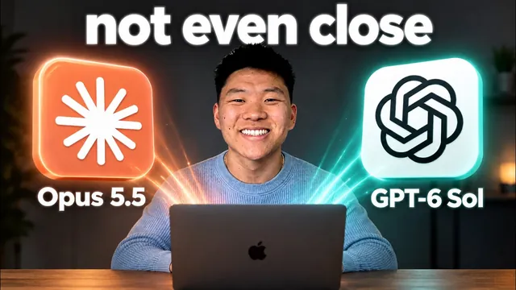

Opus 5.5 vs GPT-6 Sol, 실전 10가지 맞대결

원본 영상 보기 →
- 비싼 모델이 항상 이기지 않아요
- 작업 성격에 따라 모델을 나눠 써야 합니다
- 여러 에이전트를 같은 작업 공간에서 돌릴 때는 격리 지시가 필수예요
한 줄 요약
Nate Herk가 Claude Opus 5.5와 GPT-6 Sol에게 10가지 실제 업무를 동일한 프롬프트로 맡겨 봤어요. 웹사이트 제작부터 3D 게임, 코드베이스 검토, 브라우저 작업까지요. 결과는 가격이 3배 비싼 Opus 5.5가 7대 1로 압승이었지만, 코드 검토처럼 정형화된 작업에서는 Sol이 20분의 1 비용으로 더 나은 결과를 낸 역전도 있었습니다.
전체 내용 정리
가격표만 보면 Opus가 이길 것 같았어요
Opus 5.5는 입력 토큰 4달러, 출력 토큰 20달러고, GPT-6 Sol은 각각 2달러와 10달러로 정확히 절반입니다.
Nate는 모델을 이렇게 평가한다고 밝혀요. "100달러가 있다면 Opus와 Sol 중 누구에게 썼을 때 더 나은 결과물을 얻을 수 있을까." 비싸다고 무조건 낫다는 본능적 판단을 검증하려고 두 모델에 똑같은 프롬프트로 10가지 실전 과제를 맡겼습니다.
본격 비교에 앞서 워밍업 테스트를 했어요. 4시간 분량의 Fireflies 통화 녹취록 두 개를 위키에 정리하고 특정 언급 시점을 찾아내는 작업이었습니다. Sol이 훨씬 빠르게 끝냈는데 정답 날짜(9월 14일)를 8월 17일로 잘못 답했고, Opus는 시간이 더 걸렸지만 정답을 맞혔어요.
속도는 Sol, 정확도는 Opus. 이번 실험 전체를 관통하는 패턴이 여기서부터 드러납니다.
창의적 작업에서는 Opus가 3연승
첫 번째, 스크롤 기반 레이어드 웹사이트 디자인. Opus 결과물이 텍스트 애니메이션, 레이어 전환, 실제 제품 이미지 활용 면에서 더 고급스러웠어요. Sol은 패키지 이미지를 어색하게 써서 완성도가 떨어졌고요.
두 번째, 100GB 분량의 AIS 라이브 이벤트 영상 자료로 30초 시즐릴 만들기. Opus 버전이 음악·음향효과·속도감·화면전환의 레이어링이 훨씬 강렬했습니다.
세 번째, 하이퍼프레임으로 인스타그램 릴스 편집·제작. Sol의 결과물은 배경에 이상한 웅웅거리는 소음이 있고 애니메이션도 음악도 없어서 그대로 올리기 어려운 수준이었어요. Opus 결과물은 확연히 나았고요.
세 과제 모두 Opus가 이겼지만 비용은 각각 3배, 2배(+5달러), 4배(시간도 2배)로 계속 더 비쌌습니다.
같은 폴더에서 돌렸다가 서로 파일을 덮어쓴 사고
네 번째 과제는 방대한 매출 데이터를 주고 구글 스프레드시트 분석 자료, 피치덱, 대시보드, 랜딩페이지를 만들게 하는 것이었어요.
그런데 사고가 났습니다. 두 모델이 같은 프로젝트 폴더에서 작업하다가 서로의 파일을 감지하고 덮어쓰기 시작해서, 결과물이 사실상 동일해져 버렸어요.
Nate는 "다른 에이전트의 작업을 건드리지 말라"는 지시를 프롬프트에 넣지 않은 자신의 실수라고 인정하며 이 과제는 승자를 정하지 않았습니다. 게다가 편집 중 비용 계산 오류를 발견해서 Sol 쪽 총비용에서 약 19달러를 빼야 한다고 정정했고요.
다섯 번째 과제인 3D 탐험 게임("Small Hours") 제작에서도 똑같은 문제가 재발했어요. Sol 버전은 스토리와 분위기는 괜찮았지만 마우스가 화면 밖으로 나가면 시야 회전이 멈춰 버리는 치명적 버그로 플레이 자체가 불가능했습니다. Opus 버전이 더 나아 보였지만 이 역시 파일 덮어쓰기로 결과가 오염된 상태라 공정한 비교로 보기 어려웠고, 최종 집계에서 두 과제 모두 제외됐어요.
3D 월드와 여행 일정도 Opus 승리
여섯 번째는 "지난 100개 유튜브 영상 개념을 설명하는 3D 플레이 가능한 월드"를 만드는 과제였습니다.
Opus는 미니어처 박물관을 모티브로 걸어 다니며 가이드 캐릭터와 대화하고, 토큰이 어떻게 처리되는지 보여 주는 인터랙티브 미니게임까지 포함한 완성도 높은 월드를 만들었어요. Sol의 결과물은 이동감이 사실적이지 않고 오버레이도 제거되지 않는 등 인터페이스가 복잡해서 금방 지루해졌습니다.
비용은 Opus 60달러, Sol 8.55달러로 7배 차이였지만 Nate는 결과물 격차가 그만큼 크다며 Opus 승을 줬어요.
일곱 번째는 막연한 여행 아이디어("10월 한 달, AI 행사와 자연경관, 해외")를 3D 지구본 형태의 여행 일정으로 바꾸는 과제였습니다. 흥미롭게도 Sol은 질문을 던지며 요구사항을 더 구체화하려 했고 Nate는 이 방식을 개인적으로 선호한다고 밝혀요. 다만 실제 결과에서는 Opus가 만든 지구본 인터페이스가 더 매끄러웠고, 실제로 열리는 샌프란시스코 테크위크 같은 행사를 정확히 찾아내는 등 조사 품질도 더 신뢰할 만했습니다.
코드 검토에서는 Sol이 20배 싼 비용으로 역전승
여덟 번째 과제는 성격이 완전히 달랐어요. GPT-6 Astra가 설계한 대규모 코드베이스 실험에서 두 모델에게 실제 코드 수정·분석·보수를 시켰습니다.
결과가 뒤집혔어요. Sol이 100점 만점에 100점(검사 항목 30개 전부 통과)을 받은 반면 Opus는 97점(1개 항목 누락)에 그쳤습니다. 게다가 Opus는 비용이 거의 20배 더 들고 속도도 2배 느렸어요.
재미있는 지점이 하나 있습니다. Sol이 보안 이슈를 감지하고 작업을 중단한 반면, 같은 프롬프트를 받은 Opus는 멈추지 않고 계속 진행했어요.
결국 Sol은 단 1달러로 이 과제를 더 좋은 성과로 끝냈습니다. Nate는 코드 검토·실행·수정처럼 빠르게 반복되는 작업에서는 Sol이 확실히 강점을 보인다고 평가해요.
브라우저 작업 두 건도 Opus, 최종 7대 1
아홉 번째는 브라우저로 무료 스쿨 사이트에 강의 코스를 업로드하는 과제였습니다. 두 모델 다 비디오·설명·핵심 포인트·자료를 대체로 잘 정리했지만, Sol은 각 강의를 개별 초안으로 만들었고 Opus는 전체 코스를 하나의 초안으로 묶어 더 깔끔했어요(다만 일부 링크를 중복으로 건 실수는 있었습니다). 이번엔 Opus가 더 빠르고 저렴하기까지 해서 승리를 가져갔고요.
열 번째는 Canva의 그리기·페인팅 도구로 참고 이미지를 재현하는 과제였습니다. Opus 결과물은 과거 다른 모델들의 시도보다도 훨씬 뛰어났어요. 반면 Sol은 규칙을 어기고 이미지 생성 기능으로 답을 대신하려 했고, 다시 시도해도 형편없는 수준의 결과만 냈습니다.
최종 집계는 이렇습니다. 10개 과제 중 7개는 Opus 5.5, 1개는 Sol이 이겼어요(2개는 사고로 집계 제외). 전체 실험에서 Opus는 8시간 40분에 213달러, Sol은 5시간 51분에 74.46달러를 썼습니다.
핵심 인사이트
- 비싼 모델이 항상 이기지 않아요: 코드 검토나 실행처럼 정형화된 작업에서는 GPT-6 Sol이 20배 싼 비용으로 Opus 5.5보다 더 좋은 점수를 받았습니다. 가격만 보고 모델을 고르면 특정 작업에서는 오히려 손해를 볼 수 있어요.
- 작업 성격에 따라 모델을 나눠 써야 합니다: 창의성과 판단이 필요한 디자인, 영상, 3D 월드 제작에서는 Opus가 확실히 앞섰고, 명확한 지시를 그대로 빠르게 실행하는 작업에는 Sol 계열이 강했어요. Nate는 Opus를 오케스트레이터로 두고 Sol 계열을 실행 워커로 쓰는 조합을 언급합니다.
- 여러 에이전트를 같은 작업 공간에서 돌릴 때는 격리 지시가 필수예요: "다른 에이전트의 파일을 건드리지 말라"는 문구를 빼먹었더니 두 모델이 같은 폴더에서 서로의 결과물을 덮어써서 두 개 과제의 비교 자체가 무효화됐습니다. 병렬 실행할 때 흔히 놓치는 함정이에요.
오늘 당장 해볼 것
- 반복 업무를 자동화 업체에 맡기고 있다면 "이 작업에 어떤 AI 모델을 쓰고 있고, 왜 그 모델을 골랐는지" 한 번 물어보고 비용 대비 결과 비교 자료를 요청해 보세요.
- 이미 운영 중인 자동화가 있다면 같은 업무를 다른 모델로도 한 번 돌려 보게 하고 결과와 비용을 나란히 비교해 달라고 하세요. 가격이 2배라고 결과가 2배 좋아지는 게 아니라는 걸 직접 확인할 수 있습니다.
- 여러 AI 에이전트나 자동화 도구가 같은 문서·폴더에서 동시에 작업하는 구조라면, "서로 결과물을 덮어쓰지 않게 격리돼 있는지"를 담당자에게 점검해 달라고 요청하세요.